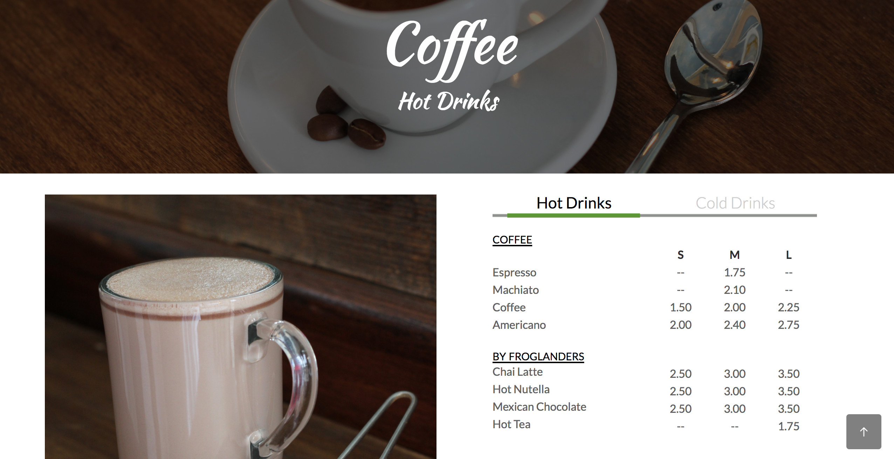
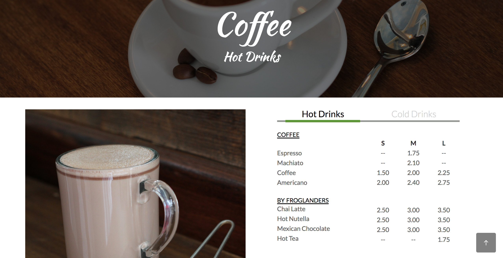

Introduction
The redesign of the Froglander's website was a collaborative effort with three students and myself. As a part of the website redesign, we also helped Froglander's rebrand itself.
The Challenge
In our needfinding process, we interviewed the owner of the frozen yogurt cafe and one of areas of improvement he mentioned was bringing in the college student demographic. The owner noted his customer population composed of families and retired individuals. Being so close to campus, how do we get college students to come?
My Role
I led prototyping, client presentations, photoshoots of food, and contributed to the web development.
The Discovery
The community of focus was college students and we identified that the cafe lacked captivating menu items and a casual and trendy ambience. The menu had a lot of items which often was overwhelming to customers and seemed out of place. Although the frozen yogurt had tables, outlets, and free parking, all perfect for studying, students had no motivation to go because there was no rewards program.
From our user research, we found college students would be more inclined to try somewhere new if the place had instagram worthy menu items and a trendy ambience. If not, college students would go out to eat if there was a fundraiser for an organization they were a part of or supported. Although that is what captures them for their first visit, they would only continue going if the food was worth or if there was an incentive through a rewards program.
The Deliverables
Our discoveries gave us a better idea of college students' motivation for going to a place. Driven by our findings, we created a redesign that rebrands Froglander's as a place that is great for studying, causal and trendy with the the bright colors and refreshed photos, and organization and college friendly.
 The menu was the biggest challenge due to it's extensive menu. We decided to have the items on one page separated by photos and headers for different sections because we felt the number of clicks would be important to maintain customer retention on the page.

We found it difficult to create sections without creating too many clicks especially its coffee selection, so we created a separation between cold and hot drinks so the user would not be overwhelmed.
The menu was the biggest challenge due to it's extensive menu. We decided to have the items on one page separated by photos and headers for different sections because we felt the number of clicks would be important to maintain customer retention on the page.

We found it difficult to create sections without creating too many clicks especially its coffee selection, so we created a separation between cold and hot drinks so the user would not be overwhelmed.
The Future
In the future, we hope to improve these aspects of the website: menu organization and the nutritional value cards.
Take a look at our web redesign and our github repository.